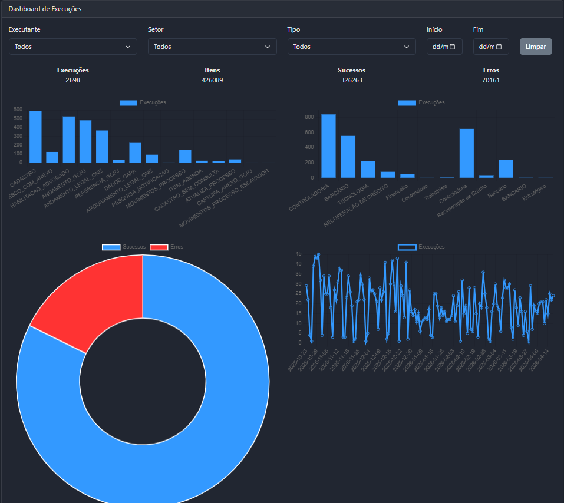
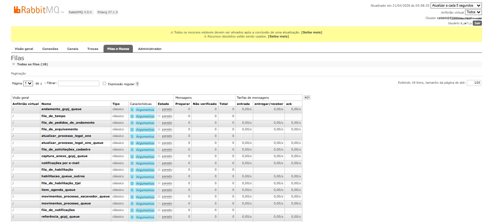
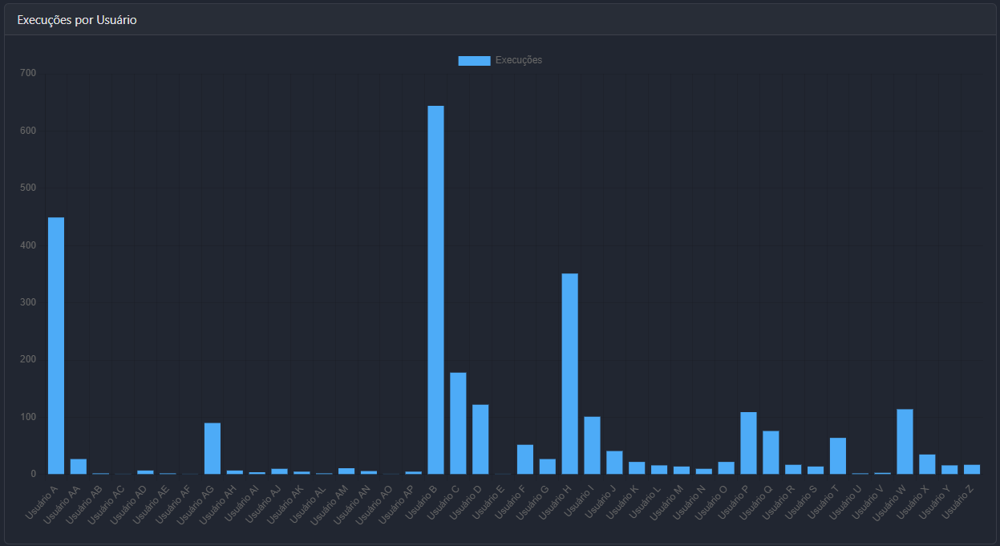
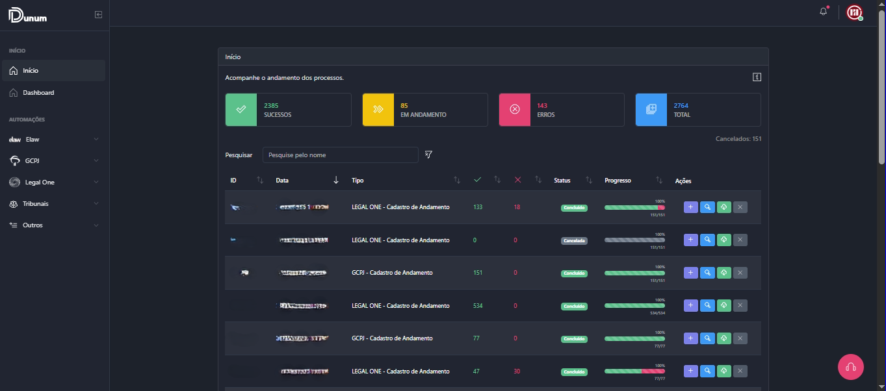

Engenheiro de Software focado em Escalabilidade, Automação e Eficiência
Eu construo sistemas que substituem processos manuais, reduzem dependência operacional e escalam com segurança.
✔ FullStack | ✔ Arquitetura | ✔ Automação | ✔ DevOps
Sobre mim
Profissional que transforma processos manuais e dependência de fornecedores em sistemas automatizados, escaláveis e sustentáveis. Integro engenharia de software, arquitetura e infraestrutura para entregar soluções resilientes, com foco em confiabilidade, rastreabilidade e impacto direto no negócio.
Visão sistêmica
Enxergo o ecossistema completo, do domínio ao monitoramento, tomando decisões técnicas alinhadas aos objetivos corporativos.
Mentalidade DevOps
Integração fluida entre desenvolvimento e infraestrutura, aplicando padrões de observabilidade, segurança e performance.
Qualidade e testes
Cultura forte de testes automatizados, pipelines confiáveis e fluxos de revisão orientados a métricas.
Melhoria contínua
Experiência em automações jurídicas e sistemas de saúde, sempre buscando otimizar fluxos e reduzir fricção operacional.
Dashboards intuitivos
Desenvolvimento de dashboards com foco em experiência do usuário, transformando dados complexos em informações relevantes.
Arquitetura escalável
Projetos estruturados para crescimento sustentável, com separação de responsabilidades, mensageria e foco em desempenho e resiliência.
Integrações e APIs
Experiência sólida na integração entre sistemas, consumo e construção de APIs REST, garantindo comunicação eficiente e desacoplada.
Foco em resultados
Soluções orientadas a impacto, com redução de custos, aumento de eficiência e melhoria contínua dos processos operacionais.
Tecnologias e Arquitetura
Backend
- Python
- Node.js
- JavaScript
- TypeScript
- APIs REST
Arquitetura & Qualidade
- Arquitetura Limpa
- POO
- Padrões de Projeto
- Testes Automatizados
Infraestrutura & DevOps
- Docker
- CI/CD
- Git / GitHub
- Cloud
- Nginx
- Load Balancing
Mensageria & Automação
- RabbitMQ
- Redis
- n8n
- Selenium
- Playwright
- Web Scraping
Casos Reais
Iniciativas com foco em redução de custos operacionais, governança de dados e escalabilidade. Cada entrega conecta arquitetura sólida, documentação e métricas de resultado.
Orquestrador de Automações Jurídicas
Sistema responsável por processar milhares de execuções diárias com controle de sucesso, erro e rastreabilidade completa. Hub proprietário que integra RPA, n8n, agents e APIs externas para escritórios, dando visibilidade em tempo real a prazos, documentos e eficiência.
- Redução de 42% no tempo médio de processos repetitivos
- +10.000 processos automatizados/dia
- Dashboard completo das execuções
Plataforma de Health Ops
Conjunto de serviços para monitorar uso do prontuário eletrônico, detectar gargalos e disparar rotinas de contingência, garantindo disponibilidade em sistemas críticos de saúde.
- Prontuário Eletrônico
- Estoque e Logística
- Monitoramento da rede, através do gerenciamento de VPN, rotas e enlaces
- Treinamento de equipe multidisciplinar
Sistemas educacionais
Construção de plataformas de interação entre alunos e professores, com foco em gestão de notas, frequência e conteúdo didático.
- Gestão de notas
- Gestão de frequência
- Gestão de conteúdo didático
- Gestão de turmas
- Gestão de alunos
Dashboard em Ação
Visão real das interfaces desenvolvidas: painéis que transformam dados operacionais complexos em informações acionáveis, com rastreabilidade total das execuções.




Evolução profissional
Analista de Sistemas · HOSPLOG Soluções em Saúde
Implementação de sistema de Prontuário Eletrônico (EHR) em hospitais públicos e unidades da Secretaria de Estado da Saúde de Sergipe, garantindo integridade de dados e interoperabilidade.
Levantamento de requisitos e suporte junto ao cliente. Ajuste do workflow de integração entre sistemas.
Monitoramento da rede, através do gerenciamento de VPN, rotas e enlaces.
Treinamento de equipe multidisciplinar.
Desenvolvedor Backend · Monteiro Nascimento Advogados
Desenvolvimento de um sistema de automações jurídicas para alto volume de dados utilizando Python e Arquitetura Hexagonal, com foco em alta escalabilidade e desacoplamento.
Orquestrações de fluxos de trabalho complexos com n8n, RPA e Web Scraping para automatizar milhares de processos jurídicos. Implementação de comunicação assíncrona usando RabbitMQ para mensagens confiáveis e processamento de tarefas.
Integração com sistemas como Legal One, Elaw e GCPJ entre outros. Estabelecimento de uma cultura de CI/CD e pipelines de testes e monitoramento contínuo.
Construção de Dashboards para visualização de dados e métricas de desempenho.
Supervisor de Tecnologia · Supmed
Gerenciar projetos, instalação e manutenção de sistemas. Atuei diretamente no levantamento de requisitos técnicos junto aos clientes. Realizei treinamento de usuários.
Implementei sistema de qualidade e auditoria interna, aumentando a eficiência dos serviços.
Construí a base de conhecimento compartilhado com procedimentos padronizados e o programa interno de nivelamento, realizando treinamentos e multiplicando conhecimento entre os membros de diversos setores.
Reprogramação de EPROMs e softwares embarcados em equipamentos médicos.
Analista de Desenvolvimento de Sistemas · Avansys/Netra
Desenvolvimento de sistemas Moodle e outras plataformas educacionais customizadas para atender as demandas da SEC/BA. Gerenciamento da infraestrutura de rede (VLAN, MAN e WAN) de dados (lógica e física) de videoconferência, de servidores Linux e Windows, máquinas virtuais (VM), configuração de switches gerenciáveis e computadores em 30 cidades pólo, auxiliar a coordenação no suporte e orientação aos operadores remotos.
Criar e alimentar relatórios periódicos dos serviços e equipamentos. Controle de qualidade das transmissões, rotas e conexões, inclusive com instituições fora da rede SEC/BA.
Documentação periódicas das atividades desenvolvidas. Minhas contribuições foram fundamentais para a implementação de soluções tecnológicas inovadoras, proporcionando melhorias significativas na gestão educacional.
Atuei diretamente nas instalações do cliente, estabelecendo um relacionamento sólido e de confiança. Minha abordagem proativa para entender as necessidades específicas do cliente permitiu uma colaboração eficaz, resultando em soluções personalizadas e alinhadas com as expectativas.
Diferenciais competitivos
Fluxos contínuos do commit ao deploy, com observabilidade e segurança por padrão.
Tomada de decisão orientada a risco, disponibilidade e continuidade de operação.
Automatizar fluxos complexos com mensageria, RPA e orquestrações n8n.
Testes, code review e métricas para reduzir retrabalho e assegurar compliance.
Vivência com ambientes híbridos, containers, balanceamento e tuning de Nginx.
Formação & Certificações
Buscando um engenheiro para escalar seus sistemas ou automatizar processos?
Disponível para liderar iniciativas estratégicas em empresas que valorizam arquitetura sólida e automação inteligente.
Entre em Contato